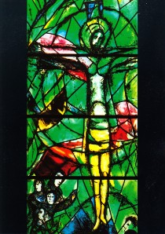

|
 | "Legyetek tehát ti is készen!" (Mt 24,
44)
 Krónikus idõhiányban szenvedek, és most mégis meg kell állni egy pillanatra. A mai
nappal elkezdõdik az új egyházi év, de ami ennél is fontosabb, hogy végre meggyújthatjuk az elsõ
adventi gyertyát. Az adventben a keresztények Jézus születésére emlékeznek, akit Krisztusnak
(felkent, tudniillik király) és Messiásnak (megváltónak) tartanak. Emellett az adventben
várják Jézus megígért második eljövetelét. Ez az Evangéliumokban és a Jelenésekben leírt
világvégét jelenti, amikor az egész világra és minden emberre kiterjed majd az Üdvösség,
amit õ Mennyek országának nevezett. Vidéken, hagyományt megtartó környezetben ilyenkor a
fiatalok betlehemezéssel viszik el mindenki otthonába az Örömhírt. Van, ahol a keresztény
családok Szent Család-járást is tartanak, ami egy sokkal elmélyültebb formája ennek a
felkészülésnek. Természetesen Budapesten ezek kimaradnak az életembõl. Ahogy sok egyéb, a
gyertyagyújtáshoz kapcsolódó esemény is, de errõl talán majd a negyedik világító
meggyújtásakor mesélek. Karácsonyfadíszes és nyuszikás képeslapot csak a bolondok
küldözgetnek egymásnak ilyenkor. A gyertyagyújtást közös éneklés, szentírási részek felolvasása és közös imádság
kíséri. A szentírásból általában Izajástól olvasunk, mert az eljövetelnek õ volt a
legköltõibb prófétája, aki valóban sok szavával elõrevetítette Jézus megszületését is. Több
igazán felemelõ gregorián dallam is jellemzi az ünnepi készülõdést. Valószínûleg én magam is
ott leszek ma valamelyik templomban. Mert ha erre nem szakítok idõt, akkor másra sincs
értelme. Vagy csak meggyújtok majd este egy gyertyát.  A Rorate kezdetû gregorián
ének bevezetõje. A Rorate kezdetû gregorián
ének bevezetõje. | | vissza a fõoldalra |  |
| 1 2 3 4 5 6 7 8 | |  | | | | | | | | | | | | | | | | | | | | 1 2 3 4 5 6 7 8 |  |
|


túraszervezõ
túra-rss
mi ez?

legjobbak
legolvasottabbak
tartalomjegyzék
rss feed

AboryM
Caesar
Count Grishnackh
cscsabi
eürdüngh
Feki
GyalogKakukk
Ishukone
Kadzseszka
LACI1993
Mini
Muska
Rommel
Segi
Takezó
tommylee
vikcee
|
BlogGép 1.1 (C) 2007-2009 tomcat
nem adom
hülye kérdések elott olvasd el a faq-t
minden, a bombagyar.hu-n és aloldalain közölt tartalom újraközléséhez
a szerkesztõk írásos beleegyezése szükséges
az olvasói kommentárok és levelek nem feltétlenül a szerkesztõk véleményét tükrözik
házirend elolvasása